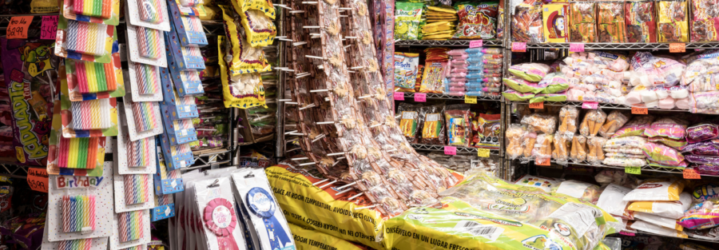

Immigrant Owned: Photographer Jonathan Castillo in Conversation
RSVP
Join us for a discussion of artist Jonathan Castillo’s Immigrant Owned portfolio, transnational migration, and immigrant Chicago. A light reception will precede the artist talk, from 5 PM to 6 PM.
Immigrant Owned is an ongoing photography project that honors the cultural and economic contributions of immigrants to Chicago’s diverse neighborhoods. Join us for a discussion of artist Jonathan Castillo’s Immigrant Owned portfolio and the vibrant communities that inspire his photography. Selections from the Immigrant Owned portfolio are on view in the Living Room from February 4-March 8, and in the Chicago History Museum’s exhibition Aquí en Chicago through November 2026. Castillo will be in discussion with Myrna García, Associate Professor of Latina and Latino Studies. García also serves as an exhibition advisor for Aquí en Chicago.
Participation level – light, audience members can choose to participate in the Q&A at the close of the program.
Programs are open to all, on a first-come first-served basis. RSVPs are not required, but are appreciated.
ABOUT THE SPEAKERS
Jonathan Michael Castillo is a visual artist, photographer and educator based in Chicago. He was the 2019-2021 recipient of the Diane Dammeyer Fellowship in Photographic Arts and Social Issues. Jonathan was included in the 2021 Hyde Park Art Center’s Ground Floor Biennial in Chicago and was a finalist for the WMA Commission in Hong Kong. His work has been featured with The New Yorker, Wired, The Chicago Tribune, CBS: Los Angeles, and Brazil’s G1 Globo. He has been interviewed on the BBC’s “World Update” and Los Angeles public radio stations KPCC and KCRW. Jonathan was recently commissioned to create a large-scale permanent installation of his work at O’Hare International Airport as part of the Terminal 5 expansion project. In 2023 he was commissioned to make work for the city of Chicago’s Citywide Plan in partnership with the Department of Cultural Affairs and the Department of Planning and Development. Exhibitions include those at the Art Institute Chicago, Photo LA 2020, the Center for Creative Photography, Aperture Gallery, House of Lucie, Filter Photo Gallery, Ralph Arnold Gallery and the California Museum of Art Thousand Oaks. Jonathan is represented by Samuel Maenhoudt Gallery in Belgium. His education includes a BFA from California State University Long Beach and MFA from Columbia College Chicago.
Myrna García is Associate Professor of Instruction in Latinx Studies at Northwestern University. She holds a doctorate in ethnic studies from the University of California, San Diego, and a master’s degree in education from Fordham University. As a scholar, she asks questions about the politics underlying history and archives used in its writing. Her research explores the activism undertaken by members of the Chicago chapter of the Center for Autonomous Social Action (CASA), one of the most important immigrant rights organizations to emerge from the Chicano Movement. García also serves on the Aquí en Chicago advisory committee at the Chicago History Museum. She champions the historical preservation of the Latinx community. Building on prior experiences as a classroom teacher in New York City, García is deeply involved in projects that foster creativity and transformative learning. García finds joy in research, teaching, programming, and curriculum building.